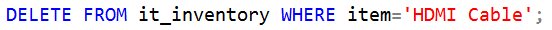
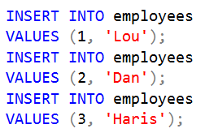

IT Inventory Management
Writing Custom SQL
In addition to using the pre-written SQL, there may be time where you
will want to write your own queries. Here we will go into what to be
aware of when doing this and why you might need to.
Again, be sure to have a handle on
writing SQL queries prior to doing anything discussed here.
As there are minor differences in SQL based on which database system is used, be aware that we are using Microsoft SQL Server Management Studio. Therefore any specific functions or syntax needed will be found by specifying SQL Server.
An essential concept to be aware of when writing queries is CRUD. CRUD
stands for "Create Read Update Delete" and describes the different types
of queries one might write. It is strongly recommended that you only write
your own custom SQL as "Read" queries. That is, ones utilizing the SELECT
keyword. This is because, as you might expect, creating, updating, and
deleting will alter data in the database, while selecting only views it.
Deleting may be especially dangerous as you will permanantly get rid of
data and possibly wipe data that is dependant on it as well. In general,
let the core funtionality of the IMS app take care of non-reading queries
unless you are confident in what you are doing and are absolutely sure
you want the specified data to be altered.
As you have seen, useful queries for viewing frequently needed info have
already been written, and more may come if the need arises. That being
said, there may be instances where very specific data may need to be
viewed or times where you may need to view certain data only once.
We will not go into any such queries in depth as it is expected that
anybody wishing to write these knows how. However, by simply analyzing
the tables and queries that do exist, one can figure out most of what they
may desire to know.
We will go over two non-reading queries that we do expect to have to write
from time to time. When an item needs to be delted from the inventory
entirely and when an new employee needs to be added to the database. This
functionality was not built into the main application for reasons discussed
later on.
When removing items through the app, you will not be asked if you would
like to delete the item completely from the database when the Total Owned
count reaches zero. Instead, if you would like to do this, (say the item
is outdated and will no longer be used by anyone) you will write a DELETE
query in the SQL Server.
Note that you may wish to completely remove an item even if the Total Owned count is not at zero. In this case, use the app's built in Remove funtionality before deleting so that the removals will still be logged. For example, if there are 4 of the item left, change "Amount to be removed" to 4 and write "Outdated" in the "Reason for removal" field.
Above is an example of a query to delete an item. Say you have reached the point where every computer has no HDMI port and only USB-C so you no longer need HDMI Cables, but HDMI to USB-C Cables. This is the query you would write. Should you need to delete something else, simply write the same thing with 'HDMI Cable' replaced with the name of the next item you are deleting. It is important to specify a WHERE because this gives a specific row to delete. Omitting WHERE will remove every row from the table. Also, it is necessary to make sure you have spelled the item exactly as it appears in the database.
An even more common occurrence will be the need to add a new employee. Shown here are the statements for populating the sample employee table used during development. Each one follows the same structure and requires you to give an employee id and name. Adding any more employees will follow the same process.